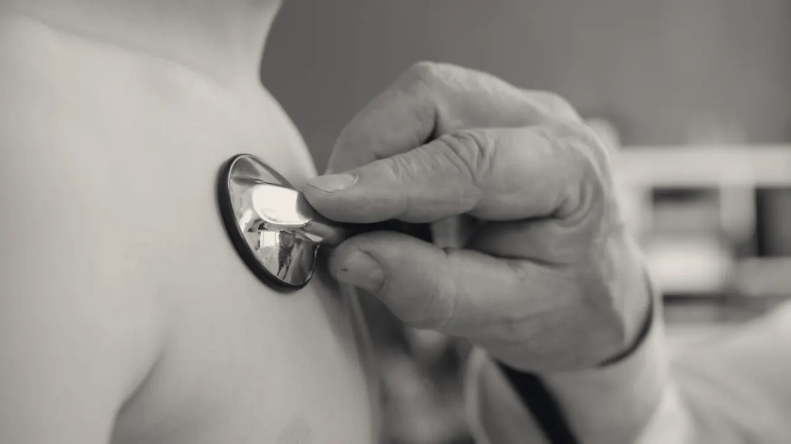
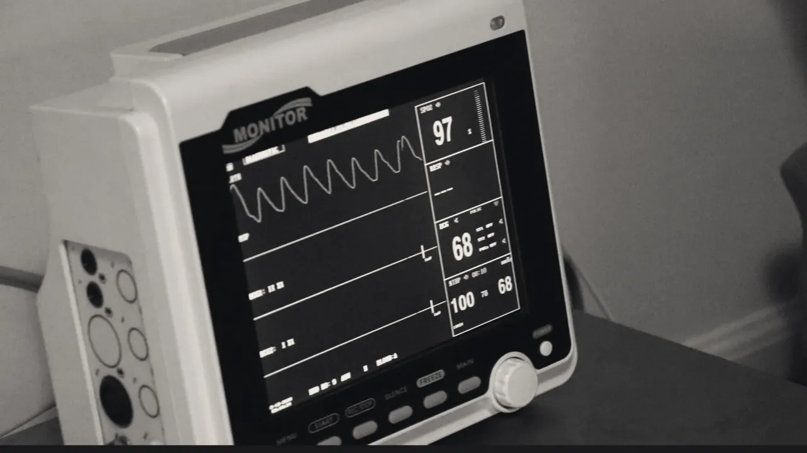
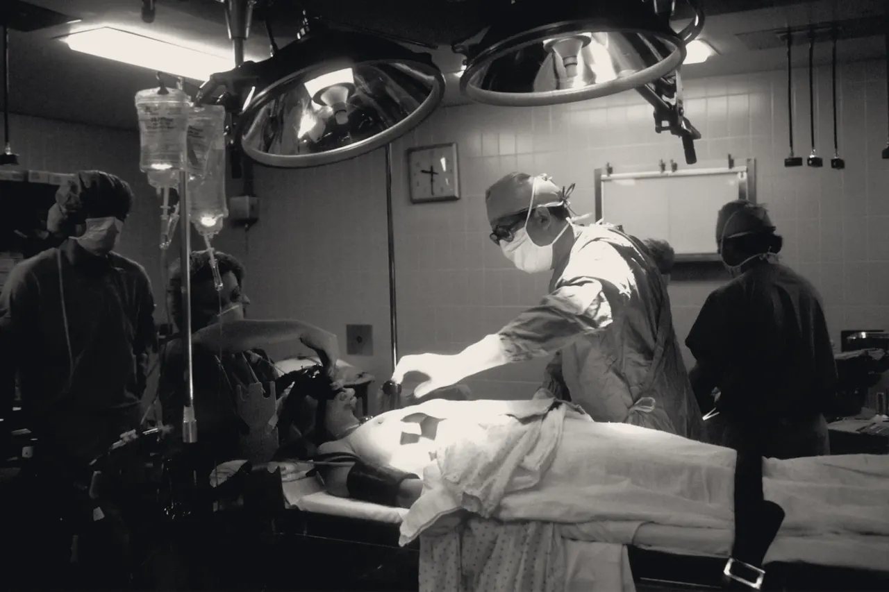

Same week new patient visitsOn call cardiologist, day and night
Scroll to travel the arteries
01Ascending aorta
Consultations
Every visit starts at the source: an unhurried first hour with Dr. Tendilla, board certified in cardiology and interventional cardiology, seventeen years in practice, in English or Spanish.
64bpmResting heart rate, beating live
First visit
60 min
Bring
Medication list, past results
Results
Same day

The aorta carries every heartbeat's blood out to the body. The two coronary arteries branch off its root, right where our route begins.
02Left main coronary artery
Echocardiography
Ultrasound of the beating heart. We watch the chambers fill and squeeze, measure the valves, and see how strongly the muscle pumps.
0%Ejection fraction: the share of blood each beat pumps out
Time
45 min
Prep
None
Radiation
None

The left main is a short trunk that feeds most of the left side of the heart. An echo shows whether the muscle it feeds moves the way it should.
03Left anterior descending
Stress testing
Some narrowings only speak up when the heart works hard. We raise the pace on a treadmill, or with medication, and record the heart with ECG and imaging.
64bpmHeart rate as the treadmill speeds up
Time
60 to 90 min
Wear
Walking shoes
Before
No caffeine that morning
This artery feeds the largest share of the heart muscle. Chest pressure that spreads to the arm, back or jaw is a warning sign: call 911.
04Apex of the heart
Cardiac catheterization
The route you just scrolled is the one a catheter takes. Through a small entry at the wrist, Dr. Tendilla maps the arteries with contrast and, when needed, opens a narrowing with a stent in the same visit.
0.0mmStent opening the artery
Entry
Wrist, most often
Sedation
Light, you stay awake
Home
Usually the same day

Here, at the tip of the heart, the left and right arteries nearly meet. After a stent, the blood thinners keep it open: never stop them without asking us.
05Right coronary artery
Prevention
The best procedure is the one you never need. Cholesterol, blood pressure, blood sugar, sleep and movement, each with a target and a plan that fits your week.
162mg/dLLDL cholesterol, brought under 70
Includes
Calcium score when useful
Follow up
Every 3 to 6 months
With
Nutrition and exercise coaching
The right coronary feeds the cells that set the heart's rhythm. Healthy blood pressure is below 120 over 80; measure at home and bring the log.
00 / 05
Lumen Cardiology · Dr. Tendilla · Contact
Tell us where to begin.
Send a request and we call back within one business day to confirm a time.
Lumen Cardiology
460 Paseo de Peralta, Suite 300 Santa Fe, New Mexico 87501
Get directions →
The on call cardiologist answers the main line at any hour. Medicare, New Mexico Medicaid and most major plans accepted; we check your coverage before the first visit.
Chest pain, fainting or sudden shortness of breath? Call 911 now. Do not use this form.